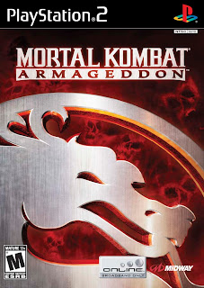

Informações sobre o jogo e outros detalhes relevantes.
Mortal Kombat Armageddon

Lista de códigos secretos
No menu principal entre em Krypt, depois em Media, selecione ???? e entre com um
dos seguintes códigos:
Arenas Secretas
Falling Cliffs – R2, Círculo, Quadrado, X, Círculo e Triângulo
Nethership Interior – R1, Esquerda, Esquerda, Baixo, L1 e Quadrado
Pryamis of Argus – R1, L1, Quadrado, X, R2 e Cima
Red Dawn Arena – Círculo, L1, Cima, Quadrado, Círculo e Baixo
Arte conceitual
Arena Firewall – Cima, Quadrado, R1, L2, Círculo e L1.
Arena General Reiko – R2, Triângulo, R1, Cima, X e X.
Arma do Sektor – R2, L1, Esquerda, X, Cima e R1.
Armadilha não usada no modo Konquest – Círculo, R2, Triângulo, Baixo, Círculo e Esquerda.
Blaze – L1, Triângulo, L2, L2, R1, Quadrado.
Carro da Mileena – R2, Direita, Cima, R1, Triângulo e Cima.
Ed Boon – L1, Esquerda, Cima, Círculo, R2 e L1.
Pyramid – Triângulo, Back, Back, X, Baixo e Círculo.
Taven – Cima, X, R2, Baixo, L2 e X.
Filmes
Fatality do Cyrax – Direita, L1, R2, Baixo, Cima e L1.
Filme Promocional – Cima,Cima,Baixo,Cima,L1 e X.
Filme Promocional – Cima, Cima, Baixo, Cima, L2 e X.
Motor Kombat – Triângulo, Cima, R2, L1, R1 e R2.
Lutadores secretos
Blaze – Triângulo, Quadrado, Esquerda, L1, Esquerda e Círculo.
Meat – Cima, Quadrado, Quadrado, Círculo, Círculo e Cima.
Taven – L2, Esquerda, R1, Cima, Círculo e Baixo.
Músicas
Armory – X, Quadrado, Esquerda, Triângulo, Quadrado e X.
Lin Kuei Palace – L2, Esquerda, Círculo, X, R2 e Direita.
Pyramid of Argus – Baixo, Esquerda, R2, L2, Cima e L1.
Tekunin Warship – Cima, Círculo, L1, R1, R1 e X.
Roupas alternativas para os lutadores
Drahmin – L2, Direita, X, R2, Cima e Cima.
Frost – Baixo, R2, R1, L1, Círculo e L2.
Nitara – Baixo, L1, Cima, L1, L1 e Direita.
Shang Tsung – L1, Esquerda, Cima, Círculo, Cima e L2.
Localização KONQUETS RELICS (modo KONQUEST):
#1 - Luva do Kobra: No começo da Botan Jungle, logo após quebrar o primeiro tronco que está no meio do caminho,
você avistará ele à esquerda.
#2 - Faca da Kira: Pouco depois da primeira relíquia, há uma árvore uma tanto que seca no lado esquerdo. Quebre
ela para pegar a Faca da Kira.
#3 - "Spike" do Kai: Quando entrar na caverna, ela estará à direita quando a trilha fazer uma curva à esquerda.
#4 - Foto do Johnny Cage: No terceiro totem que lança shurikens, à esquerda, um pouco antes dele.
#5 - Jaqueta do Jarek: No local da primeira batalha contra os Black Dragons, naquela espécie de túnel, o segundo
à esquerda.
#6 - Máscara do Kabal: Na seguna batalha contra os Black Dragons, onde você consegue o machado. Estará à
esquerda do local.
#7 - Bandeira do Hotaru: No começo do templo de Argus. Perto de onde Taven vê as imagens, à direita.
#8 - Chaves do Dairou: À esquerda do lugar onde está a bandeira do Hotaru.
#9 - Rádio do Stryker: Na segunda batalha contra os Red Dragons, à direita logo quando você entrar na sala.
#10 - Bola de aço do Moloch: Na mesma sala do rádio do Stryker. Um pouco mais adiante, à direita também.
#11 - Relógio do Hsu Hao: No corredor onde tem aquelas espécies de compressores, à direita, um pouco antes de
entrar na sala do altar, depois do último compressor.
#12 - Bomba do Cyrax: No ponto de início da fase Tekunin Warship, no caminho da esquerda.
#13 - Chapéu do Kung Lao: Na sala com vários corpos. Logo quando entrar nessa sala, no primeiro corpo a direita,
em frente ao baú da armadura dos Elder Gods.
#14 - Machado do Nightwolf: Na sala da primeira batalha contra os tekunins, onde há um ventilador no teto.
Estará naquela porta à esquerda.
#15 - Míssil do Sektor: No corredor onde você consegue o golpe especial da Bola de Fogo. No final do mesmo, à
direita.
#16 - Bracelete da Jade: Na sala onde você luta contra os tekunins usando uma espada verde. Logo quando você
entrar, estára adiante um pouco à direita.
#17 - Distintivo da Sonya: No corredor com os dois guardas logo após a batalha com a espada. Mate o da esquerda
para liberar o item.
#18 - Lâmina do Baraka: Logo no ponto de início da Arctika, à esquerda.
#19 - Essência do Blaze: Onde aquele velho estava preso, tem uma fogueira apagada. Jogue uma bola de fogo nela
para acendê-la e liberar a relíquia.
#20 - Máscara do Havik: Na parte dos compressores. Está à esquerda, entre o primeiro e o segundo compressor.
#21 - Pedra do Ermac: Na luta contra os Tengus, onde há uma fogueira. Á direita do portão da muralha.
#22 - Boina do Jax: Logo depois da batalha com a espada. Está no primeiro monte de neve à direita.
#23 - Óculos do Darrius: Na última luta contra os Tengus, na parte que você luta contra o mestre deles (Wu Lae).
Atrás da fogueira.
#24 - Máscara do Rain: Onde tem duas lâminas giratórias que vem e vão. No último monte de neve à esquerda.
#25 - Boneco da Ashrah: Na parte onde saem duas lâminas de montes de neve. No último monte de neve, à esquerda
do portão.
#26 - Máscara do Kano: Na última luta contra os guardas Lin Kueis, onde tem os arqueiros e as bolas de fogo que
são atiradas. Logo quando entrar no local, estará a direita, "colada" com a muralha.
#27 - Pedra do Shang Tsung: Após a primeira luta no Lin Kuei Palace, no primeiro vaso que você encontrar após
entrar no corredor. Quebre o mesmo para revelar a relíquia.
#28 - Máscara da Frost: Atrás do altar onde Frost estava congelada.
#29 - Medalhão do Sub-Zero: Após a luta com Sub-Zero, atire uma bola de fogo na estátua para poder pegar a
relíquia.
#30 - Leque da Kitana: Logo depois da luta contra Sub-Zero, no corredor que acaba de abrir. Estará em frente à
um corpo.
#31 - Bracelete do Liu Kang: Na primeira batalha contra os Brotherhoods Of Shadow, na sala há um corpo de um Lin
Kuei à esquerda. Vasculhe o corpo do mesmo três vezes para liberar a relíquia.
#32 - Capacete do Onaga: Na sala com os quatro corredores ocultos, onde são jogadas bolas de fogo. No primeiro
corredor à esquerda, no fim dele, à esquerda.
#33 - Shuriken do Noob Saibot: Na mesma sala, no 2º corredor à esquerda. Estará no fim dele, à direita, no
último vaso da direita. Quebre o mesmo para pegar a relíquia.
#34 - Máscara do Smoke: Após a luta com Smoke, no corredor adiante.
#35 - Pente da Sindel: Na Krimson Forest, à esquerda.
#36 - Capa do Fujin: Logo quando entrar na Red Dragon Caverns, à esquerda, ao lado do baú.
#37 - "Choker" da Tanya: Na bifurcação, pegue o corredor à esquerda. Estará logo após os quatro barris azuis, à
esquerda.
#38 - Ganchos do Mavado: Na sala onde você consegue o golpe especial de parar o tempo. Um pouco à esquerda, de
onde os Red Dragons pulam.
#39 - Cinturão do Daegon: Na mesma sala. Estará ao lado do segundo barril vermelho à direita.
#40 - Venda do Kenshi: No corredor onde você luta contra os lagartos híbridos. No fim dele, à esquerda, perto do
portão.
#41 - Cinturão da Sareena: Logo após a batalha contra as três guardas de Quan Chi. Estará dentro do primeiro
barril azul no corredor, quebre o mesmo pra revelar a relíquia.
#42 - Medalhão do Reptile: Na sala onde está Reptile "discutindo" com Caro. No barril à esquerda. Quebre o
barril para pegar o medalhão.
#43 - Coroa do Shinnok: Em Netherrealm Cliffs, no local da primeira batalha contra os Undeads. Estará à direita.
#44 - Sandalha da Li Mei: Na parte que ficam caindo meteoros, à esquerda do monolito.
#45 - Jarra do Bo' Rai Cho: No segundo andar do Shinnok's Spire. À esquerda, no lado oposto do baú com a
armadura dos Elder Gods.
#46 - Orbe da Li Mei: No quinto andar, onde tem a espada em chamas. Estará à esquerda da espada.
#47 - Capacete do Shao Kahn: No começo da Shao Kahn's Fortress. Naquela espécie de estátua de um crânio à
direita, logo no primeiro corredor, onde os arqueiros começam à atirar.
#48 - Véu da Mileena: Logo no começo da Shao Kahn's Fortress, no caminho da esquerda. Após as bolas com
espinhos. À esquerda logo quando entrar no corredor que tem alguns guardas.
#49 - Carne do Meat: No primeiro elevador, à esquerda.
#50 - Amuleto do Quan Chi: Na sala onde você tem que matar os guardas em 2 minutos. Logo quando entrar, estará à
esquerda.
#51 - Máscara do Drahmin: Logo quando entrar no corredor das celas, dentro da primeira cela à direita. A
relíquia estará no canto esquerdo.
#52 - Sensor do Mokap: Na última cela à esquerda. Também no canto esquerdo.
#53 - Medalhão do Shujinko: Na cela onde Shujinko estava preso, onde está onde está aquela luz verde.
#54 - Brinco da Sheeva: Na sala onde você luta contra a estátua de Shao Kahn. No primeiro espaço à direita, com
um arco em cima da entrada. A relíquia estara na direita.
#55 - Bracelete do Goro: Na mesma sala, no primeiro arco à esquerda. Lá dentro, à esquerda.
#56 - Ombreira do Kintaro: Na mesma sala, no segundo arco à esquerda. Á direita.
#57 - Chapéu do Raiden: Na sala do mapa, onde tem os guardas que soltam raios. No caminho da direita, à
esquerda, perto da mureta.
#58 - Colete do Reiko: Na mesma sala. Depois de pegar a última relíquia, adiante verá uma tocha apagada na
parede. Joque uma bola de fogo lá pra poder pegar a relíquia.
#59 - Lança do Scorpion: No começo da Edenian Ruins. Logo depois de enfrentar os Shirai Ryus, no meio da trilha.
#60 - Chifre do Motaro: Depois dos seis baús que apareceram com raios, à esquerda do baú com a armadura dos
Elder Gods.
Localização ELDER GODS ARMOR (modo KONQUEST):
Luvas (Armadura Masculina): Em Botan Jungle. Um pouco antes da luta contra o Kobra e perto de onde pega a música de Botan Jungle, à direita.
Cinturão (Armadura Masculina): Na Tekunin Warship. No corredor com os vários corpos. Logo quando entrar, a mesma estará à direita.
Capa (Armadura Feminina): Em Arctika. Logo depois da luta contra Sonya, verá o baú à direita.
Cinturão (Armadura Feminina): Logo após a luta contra os Tengus, onde tem uma foqueira e a pedra do Ermac. No local com um portão à direita, o baú estará à direita.
Torso (Armadura Masculina): Na parte onde tem 4 lâminas que vem e vão. À direita tem um monte de neve. Quebre o mesmo para poder abrir o baú.
Botas (Armadura Feminina): No Lin Kuei Palace. Na sala com os quatro corredores ocultos, onde soltam bolas de fogo. No primeiro corredor à esquerda. No final dele, à direita.
Botas (Armadura Masculina): Na mesma sala. No segundo corredor à direita. No final dele, à esquerda.
Torso (Armadura Feminina): Na Red Dragon Caverns. Na sala onde você consegue o golpe especial de parar o tempo, onde temalguns computadores. Estará na parede à direita de onde os Red Dragons pulam.
Pernas (Armadura Feminina): No Netherrealm Cliffs. Na parte onde você luta contra os Undeads com umas luvas. Depois de matar todos, um meteoro acertará uma parede à esquerda. A parede irá quebrar, revelando uma caverna e lá estará o baú.
Pernas (Armadura Masculina): No Shinnok's Spire. No segundo andar, à direita. Do lado oposto da jarra do Bo' Rai Cho.
Luvas (Armadura Feminina): No quinto andar, logo à direita.
Ombros (Armadura Feminina): No Shao Kahn's Fortress. Na parte das seis celas. Na última cela à direita.
Ombros (Armadura Masculina): Na parte onde você luta contra o carrasco. À direita, há uma cela trancada e à direita da mesma, há uma tocha apagada. Atire uma bola de fogo na tocha para abrir a cela e abrir o baú.
Capa (Armadura Masculina): Na sala onde você luta contra a estátua de Shao Kahn. No segundo espaço à esquerda, com um arco em cima da entrada. Lá dentro, à esquerda.
Capacete (Armadura Feminina): Na mesma sala. No segundo arco à direita. Lá dentro, à direita.
Capacete (Armadura Masculina): Em Edenian Ruins. Depois dos seis baús que aparecem com raios, adiante, entre a música da pirâmide de Argus e o chifre do Motaro.